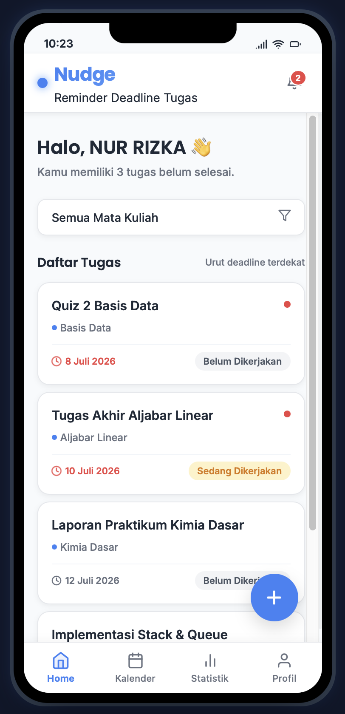
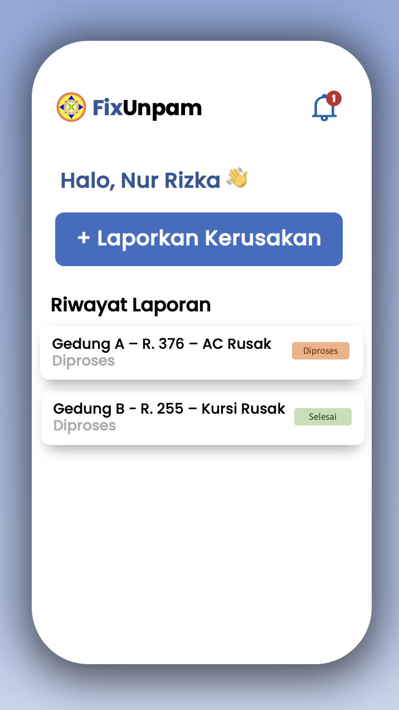
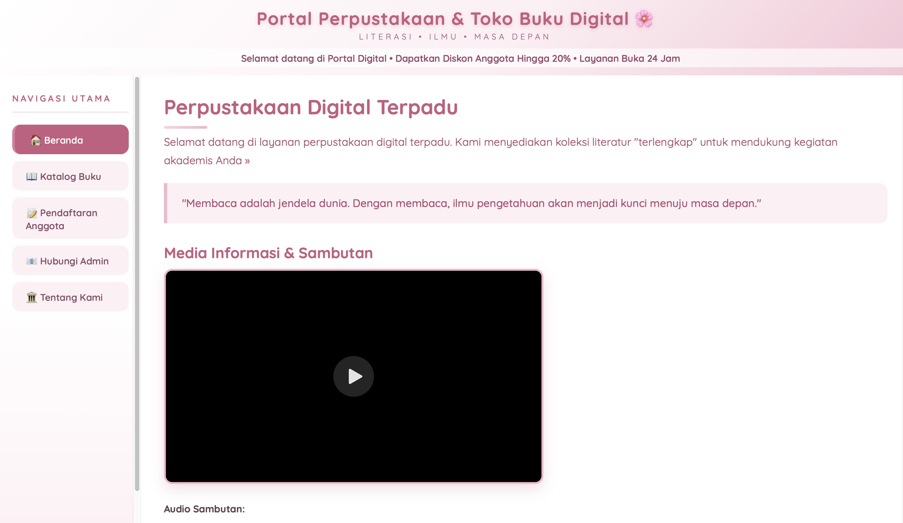
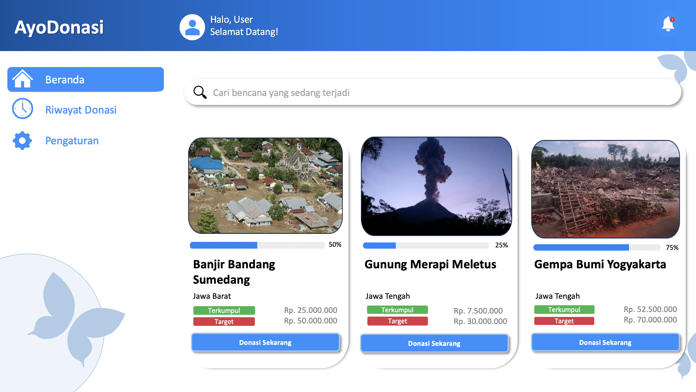
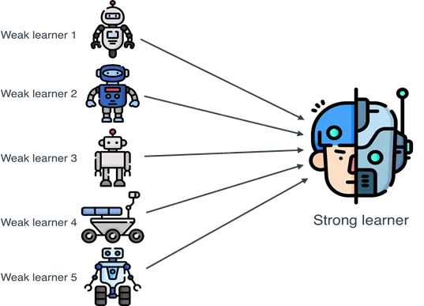

Ngoding itu seru, bukan? Yuk, belajar bikin web yang keren bareng saya!
Hubungi SayaSaya mahasiswa Computer Science yang tertarik pada pengembangan frontend. Saya suka mengubah desain menjadi tampilan web yang rapi, responsif, dan nyaman digunakan. Saat ini saya terus belajar HTML, CSS, JavaScript, dan Tailwind CSS lewat proyek-proyek kecil, sambil berbagi apa yang saya pelajari di sepanjang jalan.
Beberapa projek web yang saya kerjakan sambil belajar. Setiap projek membantu saya memahami cara membuat tampilan yang rapi, responsif, dan mudah digunakan.

Membantu mahasiswa mencatat tugas dan tenggat waktu agar tidak ada yang terlewat, dengan tampilan sederhana yang mudah dipakai.

Wadah bagi mahasiswa untuk melaporkan fasilitas kampus yang rusak, lengkap dengan formulir laporan yang praktis dan jelas.

Katalog buku online yang memudahkan pengguna mencari dan menelusuri koleksi bacaan kapan saja.

Platform penggalangan dana untuk korban bencana, dengan tampilan yang jelas dan alur donasi yang mudah diikuti.
Ngoding sambil nulis! Di sini saya berbagi catatan singkat seputar web development dan pengalaman belajar saya, siapa tahu berguna buat kamu juga.

Satu model bagus, tapi beberapa model yang bekerja sama bisa lebih baik. Yuk, kenalan dengan ensemble methods!
Baca SelengkapnyaTutorial langkah demi langkah mengklasifikasikan bunga Iris dengan algoritma K-Nearest Neighbor menggunakan Python, cocok untuk pemula.
Baca SelengkapnyaPunya pertanyaan, ide projek, atau ingin berdiskusi seputar web development dan machine learning? Kirim pesan lewat formulir di bawah, saya akan senang membalasnya.